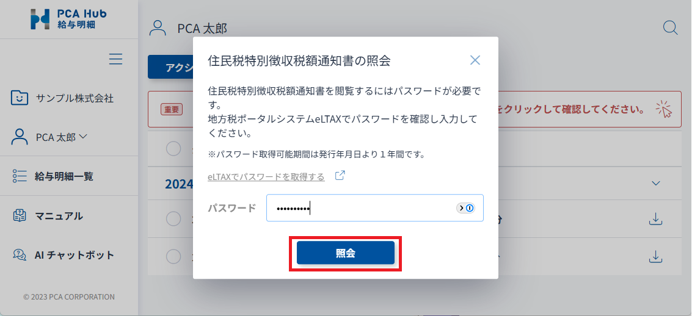

配信された住民税特別徴収税額通知書を閲覧する
PCA Hub 給与明細のクライアントサイトにアクセスします。
確認が必要な住民税特別徴収税額通知書がある場合、画面上部にバナーが表示されます。

バナーをクリックすると照会ダイアログが表示されます。
「eLTAXでパスワードを取得する」をクリックして、eLTAXのサイトから照会に必要なパスワードを取得します。
サイトの使い方は、eLTAXマニュアルコーナー＞ 特徴税通システムマニュアル ＞ 操作マニュアル ＞ 「eLTAX 特徴税通パスワード確認サイト操作マニュアル」 をご確認ください。

照会ダイアログに戻り、パスワードを貼付して[照会]ボタンをクリックします。

展開が完了すると、明細一覧に住民税特別徴収税額通知書が追加されます。

ポイント
-
配信された住民税特別徴収税額通知書は、公開されたことをメールにてお知らせします。
-
サーバーの状況により、住民税特別徴収税額通知書の公開日時よりも遅れてメールが配信される場合があります。
クライアントサイトでは公開日時を過ぎれば公開されるため、メールが届く前であっても閲覧可能です。